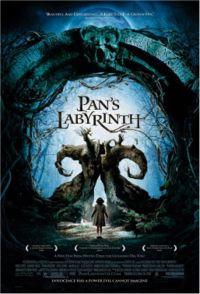

07.05.07
Posted in books, programming, reviews, wikipedia at 10:08 pm by danvk
 There’s a long tradition of great titles in the software engineering world. Djikstra’s “Goto Considered Harmful” has spawned thousands of imitators, and even a meta-paper. Fred Brook’s The Mythical Man-Month clicks as soon as you understand the title. Eric S. Raymond’s “The Cathedral and the Bazaar” gives open source software its defining image.
There’s a long tradition of great titles in the software engineering world. Djikstra’s “Goto Considered Harmful” has spawned thousands of imitators, and even a meta-paper. Fred Brook’s The Mythical Man-Month clicks as soon as you understand the title. Eric S. Raymond’s “The Cathedral and the Bazaar” gives open source software its defining image.
I read “The Cathedral and the Bazaar” as an introduction to the world of open source software for someone interested in joining it. There’s a history lesson to explain where you’ve come from and what you’ve accomplished. There’s arguments and a case study to show that you’re on the right ship. And finally, the essay serves as a call to arms, to get you excited about becoming a contributor.
I found the history lesson most interesting. I’d had some understanding of this before, but lacked much detail. ESR gives a first-person account of UNIX and software development from the late 1970′s to the present. This is the canonical story of open source. It has its heroes and villains, its true believers and false idols. There’s the Moses figure, Richard Stallman, who freed the users of UNIX from the oppressive yoke of restrictive licenses. But like Moses, he couldn’t enter the promise land. Open source stagnated, awaiting its Last True Prophet. This was Linus Torvalds, who created the Linux kernel, the last piece of the open source operating system.
ESR really uses that of tone. I get the sense that he’s intimidated by Richard Stallman and absolutely idolizes Linus Torvalds. The essay drips with hero worship. Linus is the visionary whose vision he’s writing about.
Beyond the hero worship, there is a clear exposition of the open source model. In order to avoid the problem of N^2 channels of communication amongst N contributors, open-source project have a small set of core developers. These core developers have total control over the project. They decide what gets checked in, and where the project goes. It’s a (hopefully) benevolent oligarchy. Outside of that core, there are occasional contributors and legions of testers, who can submit bug reports. Does this strict hierarchy really sound like a Bazaar?
If you want a real Bazaar, think about Wikipedia. Since I’ve never contributed to an open source project, I kept it in mind as a reference point. It works pretty well, but this perspective has the side effect of making open source development look positively Cathedral-like. Think about it. Rather than having a core set of contributors and legions of users/testers, Wikipedia explicitly aims to make all of its users into contributors. It does this by lowering the barriers to entry as low as it conceivably can, even if this leads to vandalism. All that’s needed to contribute is the ability to write in some language. Last time I checked, English had a few more speakers than C++. Rather than just reporting problems, users are empowered to fix them on the spot. See a typo? Just correct it. Want a citation? Find one and plop it in to help future readers.
I enjoyed “The Cathedral and the Bazaar” for the history lesson, but I find its central image misleading. The development process of open-source projects is as well-organized as any commercial venture.
Permalink
05.21.07
Posted in movies, reviews at 8:29 pm by danvk

(no spoilers, I promise!)
I thoroughly enjoyed Pan’s Labyrinth this weekend. It’s set in Spain in 1944, at an outpost where a few rebels are holding out against Franco’s regime. The stories of the Rebel’s fight and the fantastical world of Ofelia’s imagination run in parallel throughout the movie.
The rebel story is brutally violent. The last time I remember covering my eyes at a movie was American History X, many years ago. Pan’s Labyrinth made me do it at least three times. The violence wasn’t gratuitous, though. We all became completely desensitized to guns and seeing people being shot long ago. This violence will still make you feel something.
Ofelia’s story is the one that makes this film particularly fascinating. It’s not violent so much as occasionally gross and cringe-inducing. In the innocence vs. experience contrast that the film sets up, she’s clearly the innocent one. But she’s exceptionally brave and loyal in her own peculiar ways, just like the rebels.
I will say no more plot-wise to avoid spoiling, but a few observations:
- The sound was just phenomenal. The Captain’s gloves and the Fairies’ wings are recurring themes.
- The wiki page points to Borges as an influence. I picked up the Narnia parallels, but I have to admit, I totally missed this one. It’s there, though — the “Labyrinth” is right there in the title. It makes me wonder if there are other, more subtle Borges influences I also missed.
- The Labyrinth was very cool. It reminded me of some of the ancient art I saw in Ireland. There were about 30,000 years between the advent of art and the dawn of recorded history. That’s a huge expanse of time, and god only knows what stories are hidden in there.
Permalink
03.12.07
Posted in music, reviews at 1:29 am by danvk
 I recently noticed that a friend was intrigued by Hip Hop Is Dead, so I figured I should write a little about it. As the two readers of this blog know, I’m a big fan of Nas, or at least of Illmatic. And that’s a distinction that no small number of people make. Nas’s predicament reminds me a bit of Bob Dylan’s. No new album of Dylan’s will ever be called “his best ever”. It would be absurd. The highest praise his new albums can be given is “the best since Blood on the Tracks“. High praise, but I imagine that kind of prior success would weigh heavy on an artist. That being said, this is his best album since Illmatic.
I recently noticed that a friend was intrigued by Hip Hop Is Dead, so I figured I should write a little about it. As the two readers of this blog know, I’m a big fan of Nas, or at least of Illmatic. And that’s a distinction that no small number of people make. Nas’s predicament reminds me a bit of Bob Dylan’s. No new album of Dylan’s will ever be called “his best ever”. It would be absurd. The highest praise his new albums can be given is “the best since Blood on the Tracks“. High praise, but I imagine that kind of prior success would weigh heavy on an artist. That being said, this is his best album since Illmatic.
Read the rest of this entry »
Permalink
01.07.07
Posted in music, personal, reviews at 8:53 pm by danvk
This isn’t a list of my favorite albums that came out in 2006. It’s a list of albums that became favorites of mine in 2006, regardless of when they were released.

10. The Mountain Goats, The Sunset Tree (2005)
Learned about it from the Pitchfork 2005 list, which has been mysteriously excised from Pitchfork’s site. I love the album cover. It’s a pretty quiet album. The last two songs are eerie and wonderful.

9. Joy Division, Substance (1988)
I’ve known I should like Joy Division for a very long time, but sometimes it just takes that extra kick to make it happen. In this case it was seeing how excited Nathan got when “Dead Souls” randomly played in the background at someone’s house. Now that song stands out for me, too, and it was the key to finding more and more to like on this album. It’s a singles collection — I still haven’t been able to get into their original albums.

8. Jay-Z, Reasonable Doubt (1996)
I decided that Jay-Z was pretty cool in 2005, when Pitchfork put Blueprint as the #2 album of 2000-2004. Then I thought about Blueprint some more, and decided that, on second thought, maybe I didn’t like Jay-Z after all. So I didn’t get around to listening to Reasonable Doubt until I saw it on this list. I really love the sound of this album, starting on the very first track (right after the skit). The guest spots are incredible, with Memphis Bleek on “Coming of Age” and Foxy sounding tough as nails “Ain’t No Nigga”. And “22 two’s” may just be the cleverest song I’ve ever heard.

7. Michael Jackson, Dangerous (1991)
What do Hurricane Katrina and Michael Jackson’s Dangerous have to do with each other? Not much, but Katrina did drive a mysterious girl from Tulane over to Rice who convinced me that MJ wasn’t so bad. According to her, this album was “probably his artistic height,” so I had great expectations.
Tracks 1-6 are incredibly upbeat, but at 5-6 minutes a pop, the front half of this album gets incredibly tiring. But then we start healing the world and things settle down until the end. I was forced to sing “Heal the World” in grade school, so the song has been forever ruined for me. But “Black or White” is amazing, and the remaining tracks are solid, easy listening. And then there’s “Dangerous” to close things out.
Michael Jackson may be better when his artistry is less heightened, but Dangerous is a solid album.

6. Talking Heads, Sand in the Vaseline (1992)
I’ve always been a fan of Remain in Light, but the rest of the Talking Heads songs just didn’t click for me. Then I heard a story about David Byrne giving a concert in the Eighties while “coked out of his mind,” and somehow that did the trick.
Sand in the Vaseline is a singles collection and it was great company on my ride across the country, particularly the second disc. Standouts for me were “Lifetime Piling Up” and especially “(Nothing But) Flowers”.

5. Art Brut, Bang Bang Rock and Roll (2005)
A winner from the 2005 list. Who can resist “Formed a Band”? I normally prefer more mellow songs, but Art Brut is best when they’re completely strung out. “Good Weekend” and “Modern Art” are two of my faves. I went to the San Francisco MOMA a few months ago and suddenly had “Modern Art! Makes Me! Want to ROCK OUT!” stuck in my head, and it made me smile ear to ear. Who the hell says that?

4. The Velvet Underground, Loaded (1971)
I decided to listen to this album after seeing how happy “Sweet Jane” made somebody when it came on at a party. Sweet Jane makes me happy, too, as do the rest of the first three tracks on here (“Who Loves the Sun” and “Rock and Roll”). The rest of the album took a lot longer, but it came around. I still love the start. “Who loves the sun? Who cares that it makes flowers? Who cares that it makes showers, since you broke my heart?”

3. Clap Your Hands Say Yeah! (2005)
The big winner of Pitchfork’s 2005 list for me. Rarely does an album simultaneously do well on the year-end best list and the year-end worst list. I think the opening track is there to make “Let the Cool Goddess Rust Away” sound just that much better. Standouts are “Details of the War” and “The Skin of my Yellow Country Teeth”, but the whole album sounds great. Except for the opener “Clap Your Hands!”, of course.

2. Belle and Sebastian, If You’re Feeling Sinister (1999)
It’s amazing that I didn’t discover this album sooner, given its prominent placement on Pitchfork’s 90′s list. I made an MP3 CD of the top 13 albums on that list a few years ago, and at #14 B&S just missed the cutoff. It’s too bad. I loved this album almost instantly, especially “Stars of Track and Field”, “Get Me Away from Here I’m Dying” and “Judy and the Dream of Horses”. All three are perfect songs. It takes me back to good times in high school and college, feeling innocent and in love. Did I mention that “Stars of Track and Field” is just great? It’s forever changed my image of high school running with the girl who “only did it so / that you could wear / you terry underwear / and feel the city air / run past your body”.

1. Nas, Illmatic (1994)
In all fairness, I liked Illmatic before 2006, but this was a really good year for me and Nas. Forget the whole rivalry with Jay-Z, this is just Nas showing what he can do. “New York State of Mind” sets the tone for the album. It’s got a simple, perfect beat. It’s just a few piano notes over and over, but with Nas’s words over them, it sounds downright menacing. “Life’s a Bitch” is a perfect track with a perfect guest spot by AZ. Almost every track on this album is fantastic, and only “It Ain’t Hard to Tell” feels at all over-produced. The lyrics are incredibly dense but somebody must have told Nas “enunciate” before he recorded this, because they’re not too hard to pick out. Every once in a while you’ll catch a few lines that just blow you away. The album’s loaded with gems: “keep static like wool fabric”, “I need a new nigga, for this black cloud to follow / Cause while it’s over me it’s too dark to see tomorrow”.
“One Love” is another standout that’s a letter to his boys in the tank. He lets them know how things are going, and then there’s lines that hit you like these: “So stay civilized, time flies / though incarcerated your mind dies / I hate it when your mom cries / it kinda makes me want to murder, for real-a / I’ve even got a mask and gloves to bust slugs / for one love”.
Permalink
11.27.06
Posted in books, reviews at 10:49 pm by danvk

Recently, I’ve been trying to write at least a short review of every book I read. The latest on my list: Centauri Dreams, by Paul Gilster.
Centauri Dreams. What a name. I noticed it on a blogroll this summer and was instantly drawn in to Paul Gilster’s blog. It embodies everything that’s wonderful about blogs and the web. Interstellar travel is a niche topic. Almost nobody works on it for a living. I’d be lucky to find any books in a library on the topic, and if I did, odds are they’d be from the Apollo era, if not earlier. But with Centauri Dreams, I get a relevant, up to the minute story every day.
After a few weeks of reading the blog, I realized that there was a book to go along with it (yes, this seems backwards) and Centauri Dreams the book quickly shot to the top of my reading list. It even inspired me to get a library card in Mountain View!
The book is a summary of all the major ideas that have been advanced for interstellar travel in the last fifty years. The problem is a difficult one. Even the New Horizons spacecraft, the fastest ever launched, would take 80,000 years to get to the nearest star. It would make more sense to wait and develop new technologies, and there’s a detailed discussion of the Wait equation. Much of the book is devoted to exotic propulsion methods and the men who dreamt them up. The author clearly admires these visionaries, and has read all their books. Even the bad science fiction that they wrote on the side.
There’s Freeman Dyson and the legendary Orion project, which recommended denoating nuclear bombs underneath a spacecraft and riding the shockwaves in the 1950s. The success of the Mercury program and the Nuclear Test Ban Treaty put an end to that. Then there’s Robert Forward and his solar sail (check). A solar sail would be tens of kilometers across and incredibly thin. It would be propelled by photons from the sun, and thus wouldn’t need to carry fuel. This would make it incredibly light.
Viewing the development of space flight through the prism of these programs was eye-opening. Much like Tom Wolfe’s The Right Stuff, it shows that the rosy picture of rapid, brilliant technological advance and heroic astronauts isn’t the whole story. From the standpoint of interstellar travel, the 1950s were a golden age. The space age was coming quickly and there was infinite potential. Doors were wide open: exotic ideas like Project Orion were given funding and a chance to prove themselves. But then we had to go to the Moon by 1970, and suddenly there was no room for anything but man-carrying rockets. Projects like the Solar Sail would foreverafter be second-class citizens.
Freeman Dyson’s take on all this is fascinating, and inspired me to start reading his Disturbing the Universe, which I’ll hopefully review soon. Here’s an excerpt:
The history of the exploration of space since 1958 has been the history of the professionals with their chemical rockets. The professionals have never been willing to give a fair chance to radically new ideas. Orion is dead and I bear them no grudge for that. Orion was given a fair chance and failed. But there have been several other radical schemes that came later, schemes better than Orion, schemes that could do everything Orion could do and more, schemes that do not spread radioactive debris around the solar system. None of these newer schemes has been given the chance that was given to Orion, to prove itself in fair competition with chemical rockets. Never since 1959 have the inventors of new kinds of spaceship been encouraged to try out their ideas with flying models as we did at Point Loma. You will not find any of their models resting beside our Hot Rod in the National Air and Space Museum. (115)
There are problems other than propulsion, of course. Gilster also talks about communications, nanotech and AI. The AI discussion was awful and used old results to try and create a sense of hope where there is none. The nanotech discussion was far more interesting. Lowering a ship’s weight has fantastic effects on travel time, so miniaturization could go a long way. I pictured an interstellar mission as a swarm of microscopic ships, each specialized and capable of communicating with the others. If they were small enough, they could just be individually accelerated towards the stars. I don’t know what the masses and speeds would have to be for this to be reasonable, though.
An interstellar mission won’t have any hope of getting funding until telescopes start taking pictures of blue-green worlds around sun-like stars. And there’s a lot of work on that front. I’m excited about the ESA’s COROT mission that’s being launched in late December and NASA’s Kepler mission in 2008. The Centauri Dreams blog is a great way to stay up-to-date on such news. The book is not. I whole-heartedly recommend the former, and maybe 2/3-heartedly recommend the latter.
Permalink
« Previous Page — « Previous entries
Next entries » — Next Page »